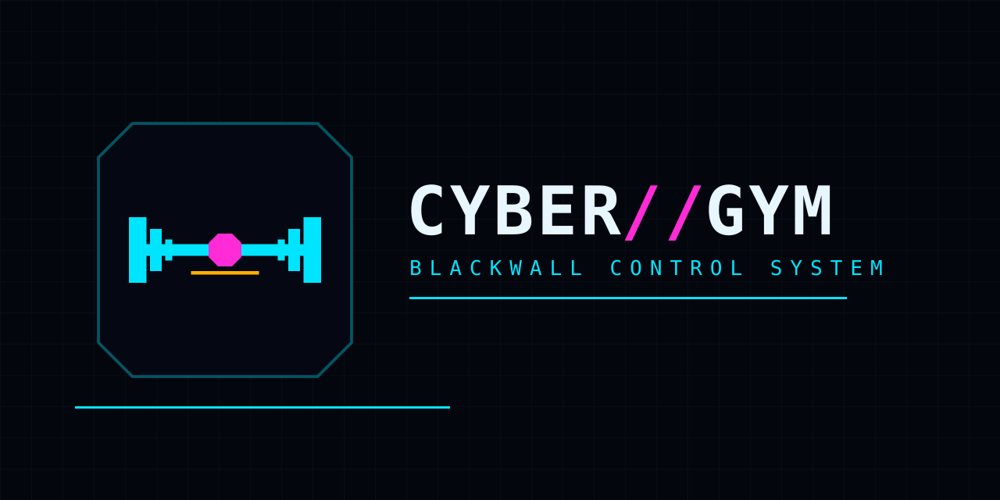

Тренировка по ходу
Подходы, повторения, вес, время под нагрузкой, кардио, суперсеты, дроп-сеты и рест-пауза. Экран сделан под одну руку.
BLACKWALL CONTROL SYSTEM
Cyber Gym помнит, что ты поднимал в прошлый раз, сколько подходов закрыл и где стоит прогресс. Приложение считает объём и рекорды, показывает карту мышц и умеет собрать программу — если попросишь.
AGPL-3.0 · без телеметрии · данные на твоём сервере

Подходы, повторения, вес, время под нагрузкой, кардио, суперсеты, дроп-сеты и рест-пауза. Экран сделан под одну руку.
Готовые стартовые планы или свои. Перестановка дней, замена упражнений, копирование программ.
Объём, рекорды, расчётный 1ПМ, прогресс по упражнениям, тепловая карта и карта мышц.
Взвешивание перед тренировкой, цель и честная кривая вместо самообмана.
Необязательный. Собирает план и разбирает то, что реально записано. Свой ключ или локальная модель.
Вход без пароля, синхронизация между устройствами и приложения для Android и iOS.
Один docker compose up -d — и у тебя свой экземпляр: API, веб-клиент и база в одном каталоге.
git clone https://github.com/Kurubik/cyber-gym
cd cyber-gym
cp .env.example .env # укажи RP_ID и ORIGIN своего домена
docker compose up -dКлючи доступа привязаны к домену: без совпадающих RP_ID и ORIGIN они не сработают. Инструкции по HTTPS и обратному прокси — в репозитории.
| Веб-клиент | React 19, Vite, Zustand |
|---|---|
| API | Node без фреймворка, WebAuthn, web-push |
| Приложения | Capacitor — Android и iOS |
| Хранение | JSON на профиль, без внешней базы |
| Лицензия | AGPL-3.0 — производная работа |